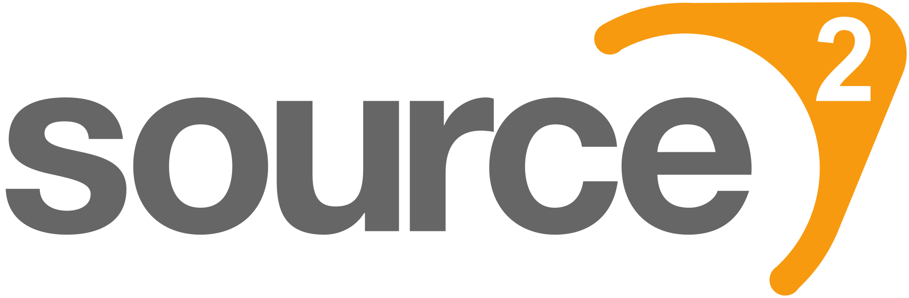

Source 2 Engine
Název: Source 2
Autoři: Valve
Jazyk: C++
Vydání: 2015
Hry:Half-life Alyx,Counter-Strike 2,...
O Source 2 Engine
Source 2 je pokročilý herní engine vyvinutý společností Valve, který je nástupcem původního Source enginu. Engine byl poprvé vydán v roce 2015 a je určen pro tvorbu her s důrazem na vysokou kvalitu grafiky, pokročilou fyziku a podporu pro virtuální realitu (VR).
Klíčové Vlastnosti
- Vylepšená grafika: Podpora pokročilého osvětlení a realistických stínů pro detailní vizuální efekty.
- Výkonný fyzikální engine: Přesné simulace fyziky, které přinášejí realistické herní zážitky.
- Nástroje pro vývojáře: Source 2 nabízí uživatelsky přívětivé nástroje, které usnadňují vývoj a úpravy herního obsahu.
- Podpora VR: Engine je optimalizován pro virtuální realitu, což umožňuje vývoj her pro VR zařízení.
- Multiplatformní podpora: Source 2 podporuje vývoj na více platformách, včetně Windows a Linux.